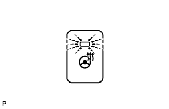
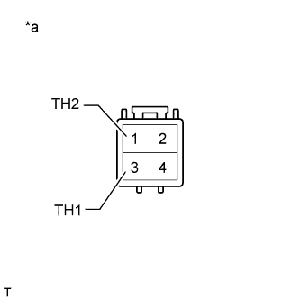
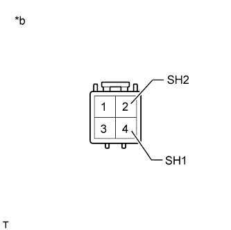
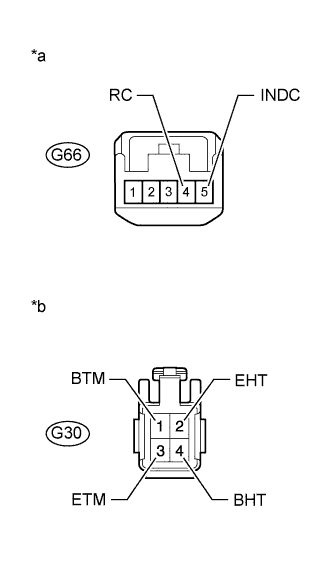
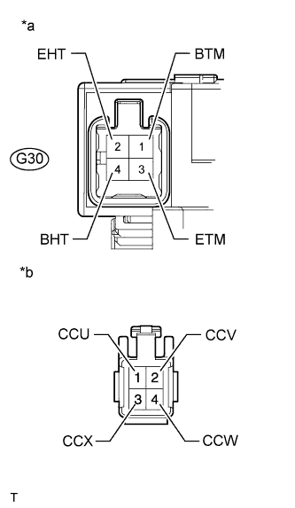
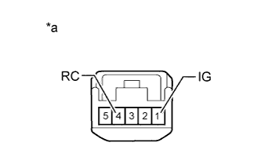

HEATED STEERING WHEEL SYSTEM > Steering Wheel does not Heat Up When Heated Steering Wheel Switch is Pressed |
| 1.CHECK STEERING HEATER SWITCH (LED OPERATION) |
|  |
Check the illumination condition of the LED.
| LED | Condition | Proceed to |
| Blinks | Engine switch on (IG) Heated steering wheel switch is pushed and held continuously for 10 seconds or more | A |
| Illuminates | Engine switch on (IG) Heated steering wheel switch is pushed | B |
| Does not blink or illuminate | Engine switch on (IG) Heated steering wheel switch is pushed | B |
|
| ||||
| A | |
| 2.INSPECT STEERING WHEEL ASSEMBLY (THERMISTOR) |
Disconnect the steering wheel controller connector.
|  |
Measure the resistance according to the value(s) in the table below.
| Tester Connection | Condition | Specified Condition |
| 1 (TH2) - 3 (TH1) | 25°C (77°F) | 9.7 to 10.3 kΩ |
| *a | Front view of wire harness connector (to Heated Steering Wheel Controller) |
|
| ||||
| OK | |
| 3.INSPECT STEERING WHEEL ASSEMBLY (HEATER·THERMOSTAT) |
Disconnect the steering wheel controller connector.
|  |
Measure the resistance according to the value(s) in the table below.
| Tester Connection | Condition | Specified Condition |
| 2 (SH2) - 4 (SH1) | 20°C (68°F) | 1.88 to 2.26 Ω |
| *a | Front view of wire harness connector (to Heated Steering Wheel Controller) |
|
| ||||
| OK | |
| 4.CHECK HARNESS AND CONNECTOR (STEERING HEATER SWITCH - SPIRAL CABLE) |
Disconnect the G66 steering heater switch connector.
Disconnect the G30 spiral cable connector.
|  |
Measure the resistance according to the value(s) in the table below.
| Tester Connection | Condition | Specified Condition |
| G66-5 (INDC) - G30-1 (BTM) | Always | Below 1 Ω |
| G66-9 (RC) - G30-3 (ETM) | Always | Below 1 Ω |
| G30-2 (EHT) - Body ground | Always | Below 1 Ω |
| *a | Front view of wire harness connector (to Steering Heater Switch) |
| *b | Front view of wire harness connector (to Spiral Cable) |
Measure the voltage according to the value(s) in the table below.
| Tester Connection | Switch Condition | Specified Condition |
| G30-4 (BHT) - Body ground | Engine switch on (IG) | 11 to 14 V |
|
| ||||
| OK | |
| Go to step 6 |
| 5.INSPECT SPIRAL CABLE SUB-ASSEMBLY |
Disconnect the G30 spiral cable connector.
Disconnect the heated steering wheel controller connector.
|  |
Measure the resistance according to the value(s) in the table below.
| Tester Connection | Condition | Specified Condition |
| 1 (CCU) - G30-1 (BTM) | Always | Below 1 Ω |
| 2 (CCV) - G30-3 (ETM) | Always | Below 1 Ω |
| 3 (CCX) - G30-2 (EHT) | Always | Below 1 Ω |
| 4 (CCW) - G30-4 (BHT) | Always | Below 1 Ω |
| *a | Component without harness connected (Spiral Cable) |
| *b | Front view of harness connector (to Heated Steering Wheel Controller) |
|
| ||||
| OK | |
| 6.CHECK STEERING HEATER SWITCH |
Disconnect the steering heater switch connector.
|  |
Measure the voltage according to the value(s) in the table below.
| Tester Connection Positive (+) tester probe - Negative (-) tester probe | Switch Condition | Specified Condition |
| G66-1 (IG) - G66-4 (RC) | Heated steering wheel switch is pushed | Below 1.25 V |
| *a | Component without harness connected (to Steering Heater Switch) |
|
| ||||
| OK | ||
| ||